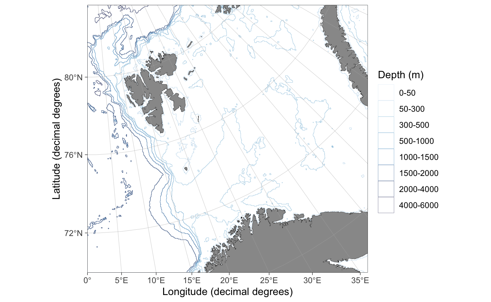
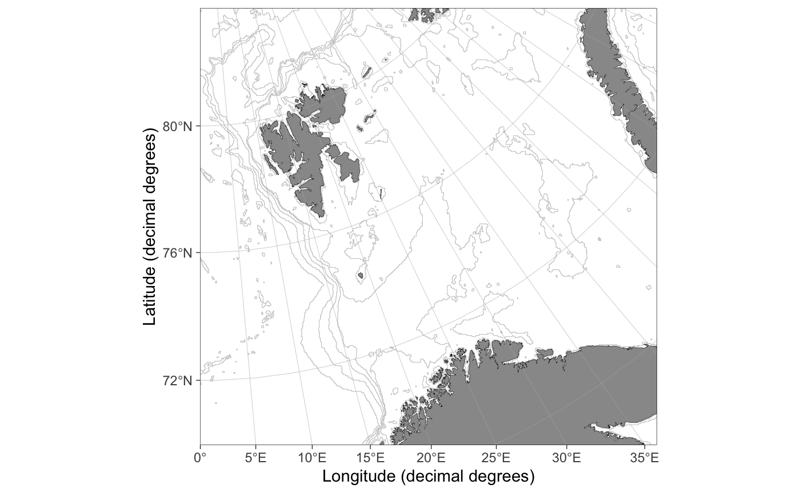
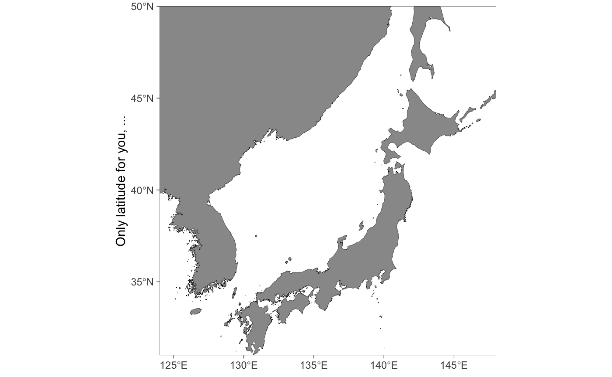
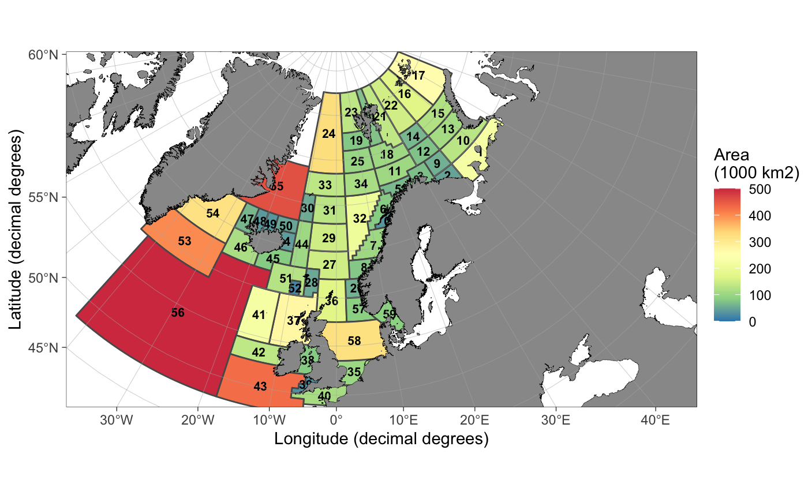

library(ggOceanMaps)
This section focuses on flexibility and user modifications. It is assumed that advanced users understand the basics of geographic information systems (GIS) and how to use these systems in R (e.g. see the Making Maps with R chapter in Lovelace et al. 2020).
Projections
The basemap function uses the limits argument to automatically detect the required projection for a map (or the data argument to calculate limits). The algorithms deciding which projection to use are defined in define_shapefiles and shapefile_list functions. These conditions are expected to change during the development of the package and documented information here or in the basemap function might be outdated. Make sure to check the projection definition functions for up-to-date information. At the time of writing, the function uses three different projections (given as EPSG codes):
-
3995 WGS 84 / Arctic Polar Stereographic. Called “ArcticStereographic”. For max latitude (
limits[4]) >= 60 (if min latitude (limits[3]) >= 30), and single integer latitudes >= 30 and <= 89. -
3031 WGS 84 / Antarctic Polar Stereographic. Called “AntarcticStereographic”. For max latitude (
limits[4]) <= -60 (if min latitude (limits[3]) <= -30), and single integer latitudes <= -30 and >= -89. -
4326 WGS 84 / World Geodetic System 1984, used in GPS. Called “DecimalDegree”. For min latitude (
limits[3]) < 30 or > -30, max latitude (limits[4]) < 60 or > -60, and single integer latitudes < 30 and > -30.
The basemap function uses pre-transformed shapefiles for each of the projections above (defined in shapefile_list). This is to make the plotting quicker and more memory efficient but leads to larger data size required by the package.
Appearance
Bathymetry styles
The basemap function contains four pre-made bathymetry styles defined using the bathy.style argument. Two of these alternatives ("poly_*") have been mapped to fill using the geom_polygon function, while the two others (contour_*) have been mapped to color. The default style ("poly_blues") has been displayed throughout this user manual. The other styles are:



Customizing bathymetry styles
The bathy.style = "poly_*" bathymetry polygons are mapped to geom_fill_discrete and can be modifying using standard ggplot syntax:
basemap(limits = c(-140, -105, 20, 40), bathymetry = TRUE) + scale_fill_viridis_d("Water depth (m)")

The bathy.style = "contour_*" bathymetry lines are mapped to geom_color_discrete and can be modifying using standard ggplot syntax:
basemap(limits = c(0, 60, 68, 80), bathymetry = TRUE, bathy.style = "contour_blues") + scale_color_hue()

Graphical parameters
The basemap function uses graphical parameters that (very objectively) happen to please the eye of the author and have worked in the applications needed by the author. The default parameters may suddenly change without warning. You may want to modify the appearances of a basemap to your own liking. This can be done using the *.col (fill), *.border.col (line color) and *.size (line width) arguments:
basemap(limits = c(-20, 30, 55, 70), glaciers = TRUE, bathymetry = TRUE, bathy.style = "poly_greys", land.col = "#eeeac4", gla.col = "cadetblue", land.border.col = NA, gla.border.col = NA, grid.size = 0.05)

Grid lines can be removed by setting the grid.col to NA. Axis labels can be manipulated using standard ggplot code:
basemap(limits = c(124, 148, 31, 50), grid.col = NA) + labs(x = NULL, y = "Only latitude for you, ...")

Add scale bar and north arrow
Scale bar and north arrows can be added using the ggspatial functions (the package is automatically loaded when you use ggOceanMaps):
basemap(limits = c(-75, -45, 62, 78), rotate = TRUE) + annotation_scale(location = "br") + annotation_north_arrow(location = "tr", which_north = "true")

Note that the north arrow in the example above points towards North where it is placed and that the direction of North varies as shown by the meridians. The scale bar is correct at 71 \(\circ\)N latitude as specified by the projection (crs = 3995) for Arctic stereographic maps.
Modifying basemap objects
The objects produced by the basemap function are standard ggplot objects with the difference that relevant information used in mapping is added to attributes of the object:
p <- basemap(-60) attributes(p) #> $names #> [1] "data" "layers" "scales" "mapping" "theme" #> [6] "coordinates" "facet" "plot_env" "labels" #> #> $class #> [1] "gg" "ggplot" "ggOceanMaps" #> #> $bathymetry #> [1] FALSE #> #> $glaciers #> [1] FALSE #> #> $limits #> [1] -3333134 3333134 -3333134 3333134 #> #> $polarmap #> [1] TRUE #> #> $crs #> [1] 3031 #> #> $proj #> [1] "+proj=stere +lat_0=-90 +lat_ts=-71 +lon_0=0 +k=1 +x_0=0 +y_0=0 +datum=WGS84 +units=m +no_defs +ellps=WGS84 +towgs84=0,0,0"
Accessing the attributes allow custom modifications of maps produced by the basemap function. See the Reordering layers section as an example.
Reordering layers
Sometimes there is a need to move land, glacier, and grid layers on top of spatial data added on a basemap. This can be done using the reorder_layers function. This example uses Norwegian fishing regions (Hovedområder f.o.m. 2018), which can be downloaded from the Norwegian Directorate of Fisheries data portal (use “ESRI shapefile” option). The example works for any spatial polygons with crs information, however.
The Norwegian fishing regions are included as an example dataset in the ggOceanMaps package. You can download these data and use the rgdal::readOGR function to read the shapefile if you wish to follow the example fully.
data(fishingAreasNor) basemap(limits = raster::extent(fishingAreasNor)[1:4]) + annotation_spatial(fishingAreasNor, fill = NA) + coord_sf(expand = FALSE)

The initial plot draws the polygons. Note how we had to add coord_sf(expand = FALSE) because layer_spatial and annotation_spatial functions from the ggspatial package seem to modify coord_sf when added to the plot. The basemap function uses expand = FALSE (run the script without the addition and see the difference). Note also how the polygon boundaries are partly on land. We want to eventually hide them under land. We also add region labels and color the polygons based on their area to demonstrate the capabilities of ggplot, ggspatial and ggOceanMaps:
labels <- sp::SpatialPointsDataFrame(rgeos::gCentroid(fishingAreasNor, byid=TRUE), data = fishingAreasNor@data) fishingAreasNor@data$area <- raster::area(fishingAreasNor)/1e9 # calculate area in 1000 km2 p <- basemap(limits = raster::extent(fishingAreasNor)[1:4]) + annotation_spatial(fishingAreasNor, aes(fill = area)) + geom_spatial_text(data = df_spatial(labels), aes(x = x, y = y, label = FID), size = FS(8), fontface = 2) + scale_fill_distiller(name = "Area\n(1000 km2)", palette = "Spectral", na.value = "white", limits = c(0, 500), oob = scales::squish) reorder_layers(p)

Ideally, the region labels should not go under land. This can be fixed by plotting the labels on top of the reordered ggplot object. To demonstrate how to reorder layers, we do this manually here:
p <- reorder_layers(p) tmp <- sapply(p$layers, function(k) !is.null(k$mapping$label)) # the layer with label mapping p$layers <- c(p$layers[-which(tmp)], p$layers[which(tmp)]) p

Custom shapefiles
The ggOceanMaps package uses vector (spatial polygon) data to make the plotting more efficient and to produce sharp images at any resolution. For the time being, the package supports three kinds of shapefiles: 1) land shapes, 2) glacier shapes, and 3) bathymetry shapes. Each of these shapes has to be defined using the same projection. Since the shapefiles are large and generating them may require long processing time, it is most convenient to save them in a Rdata file as sp::SpatialPolygonsDataFrames objects and load them to the memory when used to make a map. Useful sources for spatial data are:
Vector data
- Natural Earth Data provides polygon data in relatively high detail for the entire Earth. Used as data-source for land and glacier shapes throughout the package, except for the most detailed maps.
- Norwegian Mapping Authority provides high-resolution spatial data for mainland Norway and Svalbard.
- Norwegian Polar Institute provides high-resolution vector data for Norwegian polar regions.
Raster data for bathymetry
- GEBCO Compilation Group (2019) GEBCO 2019 15-arcsecond grid. The highest resolution open bathymetry grid available at the moment. Referred to as “GEBCO data”.
-
ETOPO1 1 Arc-Minute Global Relief Model. Can also be accessed using the
marmap::getNOAA.bathy(see Section 1). Referred to as “NOAA data” and “ETOPO1 data”.
There are probably more sources which the author has not needed yet. Please send an email to add more options to the list. The bathymetry datasets are large and require vectorization before they can be plotted in ggplot2 within a reasonable time.
Here we go through how to plot customized shapefiles for the Barents Sea as an example. A similar procedure can be applied to any region in the world.
Bathymetries
The Natural Earth Data provides bathymetry vector data, which can be readily used in ggOceanMaps. The contours in that dataset are, however, not very practical for marine biology and fisheries in shallow seas such as the Barents Sea. Download the ETOPO1 dataset as grid registered NetCDF gmt4 to a folder in your computer. It may be beneficial to make a “GIS” or “Shapefiles” folder where you store similar datasets for later use. Whether you use ice or bed-rock surface does not matter for this example as there are no glaciers under the sea-level within the region of interest. In any case, this choice has no visual effect because land and glaciers will be plotted on top of the bathymetry, but the ice surface option will lead to smaller file size.
The bathymetry needs first to be reclassified and formatted for the consequent vectorization step. First, we need to define the location of the ETOPO1 dataset and to find limits for our region in decimal degrees. The limits can be found using the basemap function. It is advised to use slightly wider limits than the region of interest.
etopoPath <- "" # Replace by the path to the folder where the ETOPO1 grd file is located. lims <- c(-8, 65, 68, 82) projection <- "+init=epsg:32636" basemap(limits = lims)
We also need to define an appropriate projection. We will use the UTM 36N zone projection, which is approximately in the middle of our area of interest. We define higher resolution contour in depths 0-500 m because our area of interest is relatively shallow. The raster_bathymetry function is relatively slow for large data. The aggregation.factor argument can be used to reduce file size but will influence the resolution of the resulting shapefile (higher factors lead to a lower resolution).
rb <- raster_bathymetry(bathy = paste(etopoPath, "ETOPO1_Ice_g_gmt4.grd", sep = "/"), depths = c(50, 100, 200, 300, 500, 1000, 1500, 2000, 4000, 6000, 10000), proj.out = projection, boundary = lims )
Now we have the bathyRaster object which can be vectorized:
The vectorization is done using the vector_bathymetry function. The drop.crumbs and remove.holes parameters can be used to reduce the file size, while the smooth parameter makes the contours look smoother under high zoom levels. Note that the smoothing of raster cell edges is completely arbitrary and may lead to map contours that do not exist in reality.
bs_bathy <- vector_bathymetry(rb) sp::plot(bs_bathy)
Land shapes
Land shapes could theoretically be defined from the bathymetry raster (depth = 0). Nevertheless, since the 10m Natural Earth Data vectors are of high resolution, there has been no need to write a function to do this. We use Natural Earth Data instead. Download the Natural Earth Data Land and Minor Islands vectors to your “GIS” or “Shapefiles” folder and define folder paths under:
NEDPath <- "" # Natural Earth Data location outPath <- "" # Data output location
Once done, we go ahead and process the shapefiles:
world <- rgdal::readOGR(paste(NEDPath, "ne_10m_land/ne_10m_land.shp", sep = "/")) islands <- rgdal::readOGR(paste(NEDPath, "ne_10m_minor_islands/ne_10m_minor_islands.shp", sep = "/")) world <- rbind(world, islands) bs_land <- clip_shapefile(world, lims) bs_land <- sp::spTransform(bs_land, CRSobj = sp::CRS(projection)) rgeos::gIsValid(bs_land) # Has to return TRUE, if not use rgeos::gBuffer bs_land <- rgeos::gBuffer(bs_land, byid = TRUE, width = 0) sp::plot(bs_land)
Glacier shapes
Download the Natural Earth Data Glaciated Areas vectors to your NEDPath.
glaciers <- rgdal::readOGR(paste(NEDPath, "ne_10m_glaciated_areas/ne_10m_glaciated_areas.shp", sep = "/")) rgeos::gIsValid(glaciers) # Needs buffering glaciers <- rgeos::gBuffer(glaciers, byid = TRUE, width = 0) bs_glacier <- clip_shapefile(glaciers, lims) bs_glacier <- sp::spTransform(bs_glacier, CRSobj = sp::CRS(projection)) rgeos::gIsValid(bs_glacier) sp::plot(bs_glacier)
Plotting the shapefiles using basemap
Now that we have the shapefiles, we can save them to a file so that we do not run the script above every time we plot a map using custom shapefiles.
save(bs_bathy, bs_land, bs_glacier, file = paste(outPath, "bs_shapes.rda", sep = "/"), compress = "xz")
The shapefiles can now be plotted using the basemap function:
basemap(shapefiles = list(land = bs_land, glacier = bs_glacier, bathy = bs_bathy), bathymetry = TRUE, glaciers = TRUE)

The list elements land, glacier and bathy are required, but glacier and bathy can be set to NULL if bathymetry and glaciers are set to FALSE, respectively. This means that you are not forced to define bathymetries and glaciers for your custom shapefile maps if plotting them is not desired. Note how the map becomes plotted outside its actual limits. This issue will hopefully be fixed in the future. The map can be limited using the limits or data arguments as any basemap:
basemap(limits = c(10, 53, 70, 80), shapefiles = list(land = bs_land, glacier = bs_glacier, bathy = bs_bathy), bathymetry = TRUE, glaciers = TRUE)